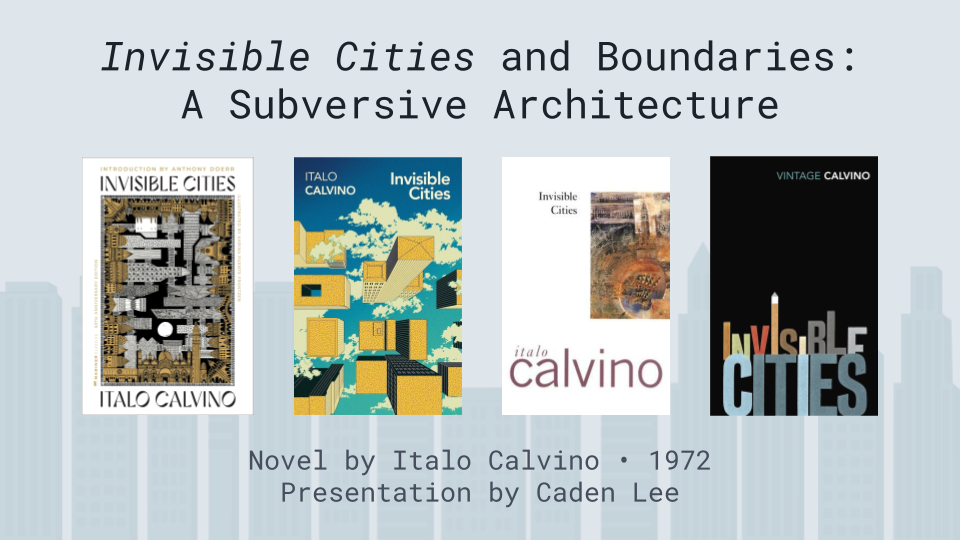

Caden Lee's Digital Archive
W O R L D B U I L D I N G - 2 0 2 5
# Spring 2025 Research Presentation 2025/05/26
For my research presentation, I decided to create a slideshow to provide a similar experience to presenting in person.
Instructions: As you click through the presentation using the blue arrow buttons below, multimodal features will appear underneath some of the slides, which you can optionally interact with or visit.

/-
🡱
Use this button to go
to the next slide
Use this button to go
to the next slide


Image credits and source citations are provided in the slides (above)
All code (software and associated documentation files) is © 2025 Caden Lee under the MIT license (source).
Analysis on this digital archive is written by Caden Lee, unless stated otherwise.
All referenced works (images, websites, quotes, etc.) not by me belong to their respective creators and are used here for commentary and educational purposes.
Last updated: 2025/05/26
All referenced works (images, websites, quotes, etc.) not by me belong to their respective creators and are used here for commentary and educational purposes.
Last updated: 2025/05/26